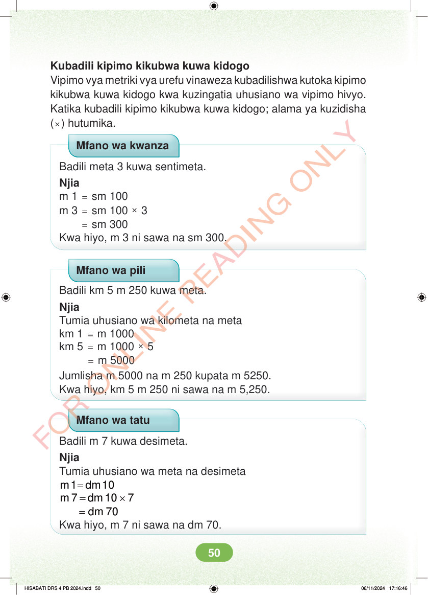

Kubadili kipimo kikubwa kuwa kidogo Vipimo vya metriki vya urefu vinaweza kubadilishwa kutoka kipimo kikubwa kuwa kidogo kwa kuzingatia uhusiano wa vipimo hivyo. Katika kubadili kipimo kikubwa kuwa kidogo; alama ya kuzidisha (×) hutumika. Mfano wa kwanza Badili meta 3 kuwa sentimeta. Njia m 1 = sm 100 m 3 = sm 100 × 3 = sm 300 Kwa hiyo, m 3 ni sawa na sm 300. Mfano wa pili Badili km 5 m 250 kuwa meta. Njia Tumia uhusiano wa kilometa na meta km 1 = m 1000 km 5 = m 1000 × 5 = m 5000 Jumlisha m 5000 na m 250 kupata m 5250. Kwa hiyo, km 5 m 250 ni sawa na m 5,250. Mfano wa tatu Badili m 7 kuwa desimeta. Njia Tumia uhusiano wa meta na desimeta = m 1 dm 10 = × dm 10 7 m 7 = dm 70 Kwa hiyo, m 7 ni sawa na dm 70. HISABATI DRS 4 PB 2024.indd 50 HISABATI DRS 4 PB 2024.indd 50 06/11/2024 17:16:46 06/11/2024 17:16:46